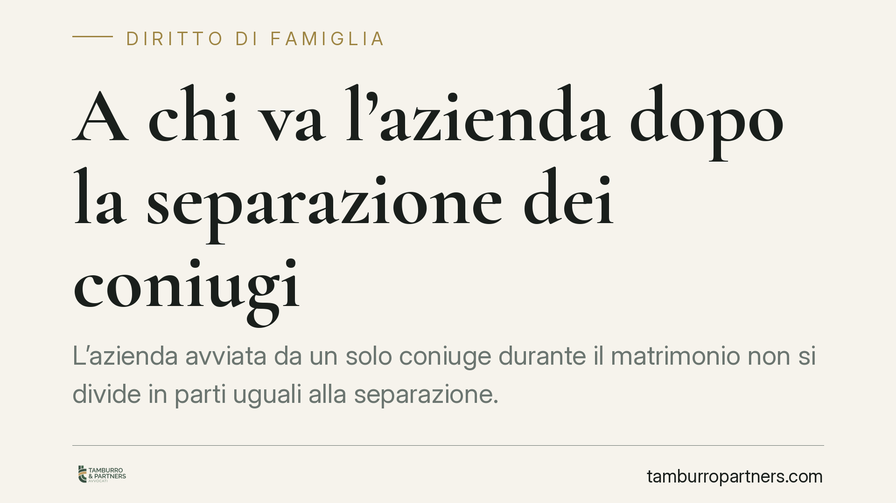
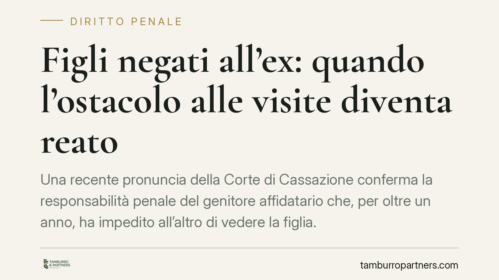
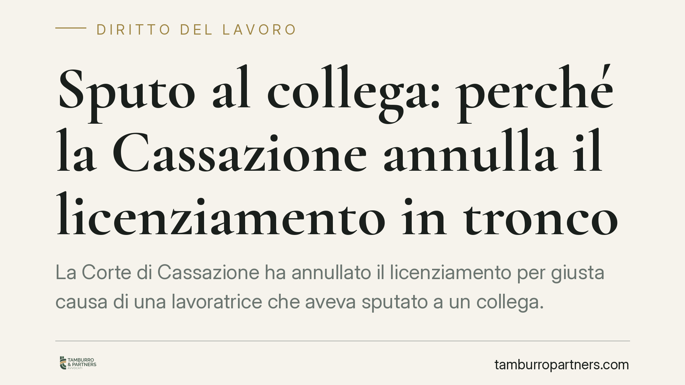
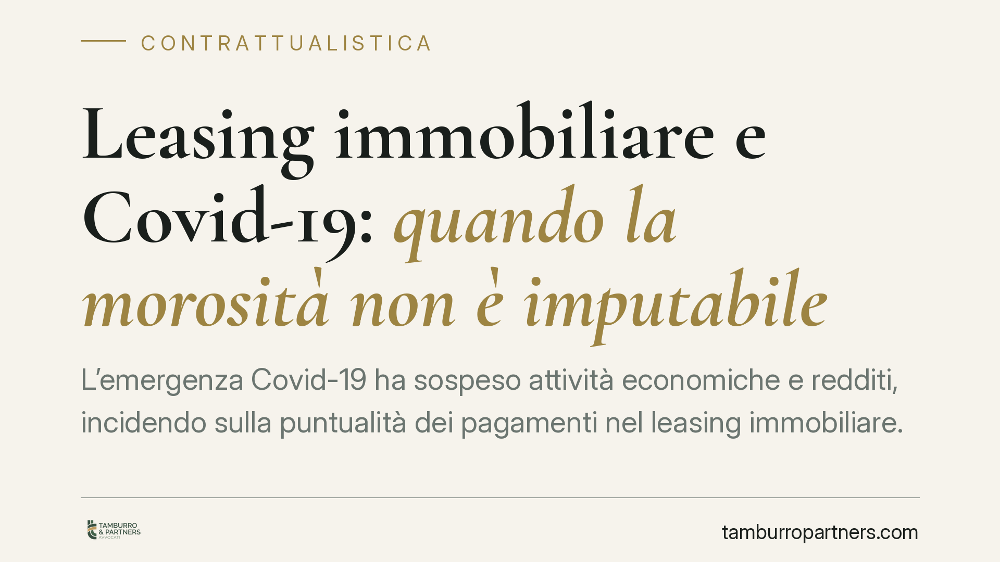
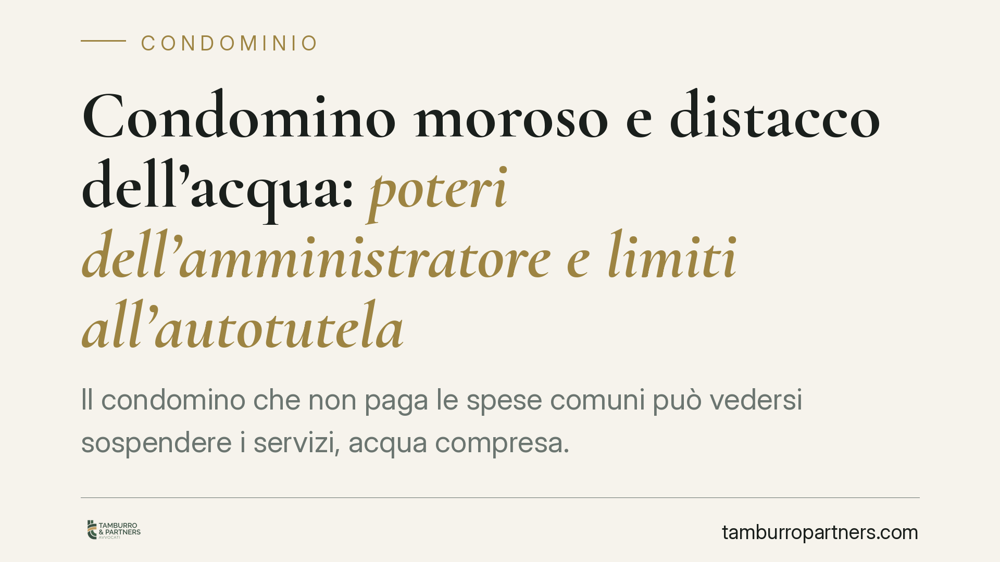
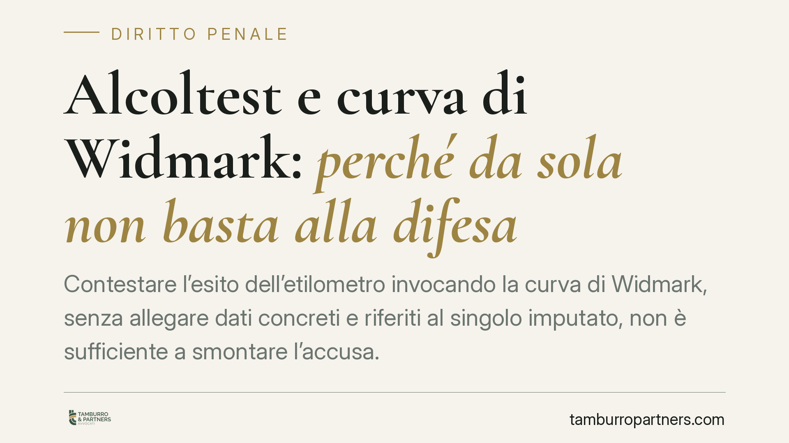
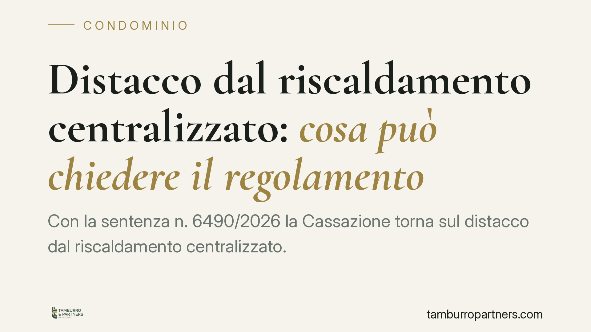
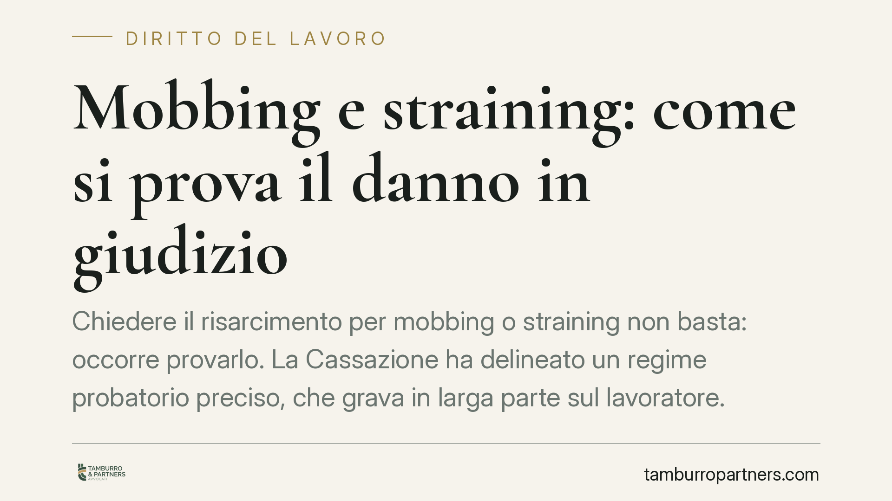

Locazione di immobile abusivo: contratto valido, ma il locatore rischia
La locazione di un immobile abusivo resta valida: l'irregolarità urbanistica incide sul rapporto con il Comune, non sulla tenuta del contratto. Lo ribadisce una recente pronuncia d…

Lavoro nero e sfruttamento: i confini della responsabilità penale del datore
Il lavoro nero non è solo una violazione amministrativa. In presenza di indici di sfruttamento scatta il reato di caporalato, con pene detentive, confisca del profitto e responsabi…

Donazioni alla badante e circonvenzione d'incapace: i limiti fissati dalla Cassazione
La Corte di Cassazione annulla una condanna per circonvenzione d'incapace a carico di una badante beneficiaria di donazioni. Il principio è netto: il morbo di Parkinson non equival…

Cedolare secca sugli alloggi per dipendenti: il principio delle Sezioni Unite
Un immobile abitativo affittato a un'azienda per alloggiare i propri dipendenti può accedere alla cedolare secca. Lo hanno chiarito le Sezioni Unite della Cassazione, superando la …

Indennità sostitutiva del preavviso: natura e inquadramento
La qualificazione dell'indennità sostitutiva del preavviso incide su calcolo, voci differite e trattamento fiscale. L'art. 2118 c.c. consente il recesso immediato a fronte del paga…

A chi va l'azienda dopo la separazione dei coniugi
L'azienda avviata da un solo coniuge durante il matrimonio non si divide in parti uguali alla separazione. Resta a chi la gestisce, mentre all'altro coniuge spetta un diritto di cr…

Figli negati all'ex: quando l'ostacolo alle visite diventa reato
Una recente pronuncia della Corte di Cassazione conferma la responsabilità penale del genitore affidatario che, per oltre un anno, ha impedito all'altro di vedere la figlia. Esclus…

Sputo al collega: perché la Cassazione annulla il licenziamento in tronco
La Corte di Cassazione ha annullato il licenziamento per giusta causa di una lavoratrice che aveva sputato a un collega. Il gesto, pur grave, nasceva da dinamiche sentimentali priv…

Rumori in condominio: la non punibilità per particolare tenuità
Gli schiamazzi tra condomini possono integrare il reato di disturbo delle occupazioni o del riposo, ma non sempre portano a condanna. Un recente orientamento della Corte di Cassazi…

Danni alle parti comuni: l'assemblea può addebitarli a un solo condomino?
Un recente orientamento del Tribunale di Genova ribadisce un principio netto: l'assemblea condominiale non è un giudice e non può addebitare a un singolo condomino le spese per dan…

Alloggio del portiere non più utilizzato: come si vende
L'alloggio destinato al portiere è un bene comune finché serve a quella funzione. Ma cosa accade quando il servizio di portierato cessa stabilmente e i locali restano inutilizzati?…

Leasing immobiliare e Covid-19: quando la morosità non è imputabile
L'emergenza Covid-19 ha sospeso attività economiche e redditi, incidendo sulla puntualità dei pagamenti nel leasing immobiliare. La questione è se, e in che misura, i canoni non on…

Pena pecuniaria sostitutiva: le Sezioni Unite escludono il carcere per presunta insolvenza
Le Sezioni Unite della Cassazione affrontano un nodo pratico rilevante: il giudice che decide se trasformare una pena detentiva breve in pena pecuniaria non può fondare il diniego …

Contratti plurilaterali: il vizio di un contraente non annulla l'accordo
Il Tribunale di Torino, con la sentenza n. 3564/2026, ribadisce un principio cardine della contrattualistica plurilaterale: la nullità, l'annullabilità o l'inadempimento di un sing…

Mediazione: la procura sostanziale per farsi sostituire dall'avvocato
In mediazione la parte deve comparire di persona, ma può farsi sostituire dall'avvocato. Una recente ordinanza della Cassazione chiarisce quale atto serve: una procura sostanziale,…

Debiti del defunto straniero: risponde l'erede o l'amministratore dell'eredità?
Quando muore una persona con cittadinanza o residenza all'estero, chi risponde dei suoi debiti? L'erede italiano o un amministratore dell'eredità nominato secondo una legge stranie…

Condomino moroso e distacco dell'acqua: poteri dell'amministratore e limiti all'autotutela
Il condomino che non paga le spese comuni può vedersi sospendere i servizi, acqua compresa. Ma la legge distingue nettamente tra il potere dell'amministratore di interrompere l'ero…

Spese del tetto spiovente: chi paga davvero in condominio
In un condominio con coperture miste, tetto e lastrico solare, il rifacimento del tetto spiovente non si divide sempre fra tutti. Il codice civile àncora l'obbligo di spesa alla fu…

Alcoltest e curva di Widmark: perché da sola non basta alla difesa
Contestare l'esito dell'etilometro invocando la curva di Widmark, senza allegare dati concreti e riferiti al singolo imputato, non è sufficiente a smontare l'accusa. Lo ribadisce l…

Distacco dal riscaldamento centralizzato: cosa può chiedere il regolamento
Con la sentenza n. 6490/2026 la Cassazione torna sul distacco dal riscaldamento centralizzato. Il regolamento non può vietarlo in assoluto, ma può subordinarlo a una verifica preve…

Perizia errata nelle aste giudiziarie: il risarcimento per perdita di chance
Chi acquista un immobile all'asta confida nella stima del perito nominato dal giudice. Quando quella perizia è errata, l'aggiudicatario può subire un pregiudizio economico. La giur…

Sospensione condizionale e riabilitazione: la svolta della Consulta
La Corte Costituzionale è chiamata a pronunciarsi sull'automatismo dell'art. 164 del codice penale che, in presenza di una precedente condanna, preclude al giudice di concedere la …

Box allagati: condominio e supercondominio rispondono in solido
Il Tribunale di Milano, con la sentenza 5073/2026, affronta un tema frequente nei complessi immobiliari di grandi dimensioni: chi paga quando un box auto si allaga per un difetto s…

Calcinacci caduti dal condominio: chi deve provare la provenienza
Il Tribunale di Castrovillari (sentenza 830/2026) torna su un tema concreto: chi viene colpito da calcinacci caduti da un edificio deve dimostrare che provengono da una parte comun…

TFR dal Fondo di Garanzia INPS senza fallimento del datore
Il lavoratore che non riceve il trattamento di fine rapporto può rivolgersi al Fondo di Garanzia INPS anche quando il datore non è fallito. La giurisprudenza ha ampliato le ipotesi…

Assegno divorzile e indagini fiscali sull'ex coniuge: quando il giudice deve attivarsi
Con l'ordinanza n. 6533/2026 la Cassazione torna sul potere del giudice del divorzio di disporre accertamenti tributari d'ufficio. Il principio: non è un atto automatico, ma non pu…

Nullità della nomina dell'amministratore: chi va citato in giudizio
Chi contesta la nomina dell'amministratore non deve citare in giudizio tutti i condomini. Le Sezioni Unite della Cassazione hanno chiarito che l'impugnazione, anche per nullità, si…

Rateizzazione del debito tributario e confisca per equivalente
Il contribuente condannato per un reato tributario che sta pagando il debito a rate rischia comunque la confisca dei beni? Una recente pronuncia della Corte di Cassazione torna sul…
Licenziamento via WhatsApp: le spunte blu fanno partire i 60 giorni
Una sentenza del Tribunale della Spezia riconosce al messaggio WhatsApp valore di comunicazione scritta del licenziamento. Le due spunte blu, se confermate da perizia tecnica, prov…

Mobbing e straining: come si prova il danno in giudizio
Chiedere il risarcimento per mobbing o straining non basta: occorre provarlo. La Cassazione ha delineato un regime probatorio preciso, che grava in larga parte sul lavoratore. Capi…